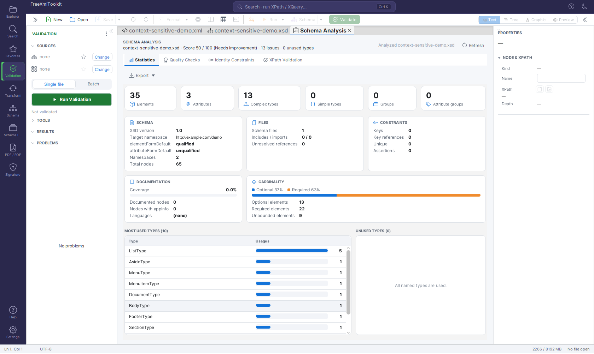
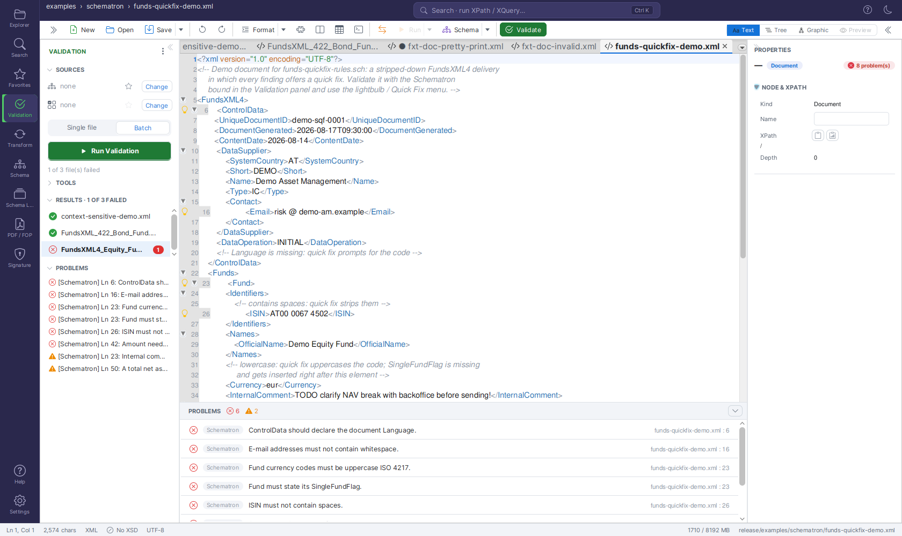

XSD Validation¶
Version: 2.1.0
Note: The standalone XSD Validation tab has been retired. Validation — XSD and Schematron, single-file and batch — now lives in the Unified Shell's Validation activity panel. The capabilities below are unchanged; they are reached through the shell's Validation panel rather than a dedicated sidebar tab.
Validate your XML files against XSD schemas to check if documents follow the rules defined in the schema. Supports both single file and batch validation.
Overview¶
The XSD Validation tool provides two modes:
| Mode | Description |
|---|---|
| Single File | Validate one XML file at a time |
| Batch Validation | Validate multiple XML files at once |

XSD and Schematron validation now live in the Unified Shell's Validation activity panelWhat Does It Check?¶
| Check | Description |
|---|---|
| Structure | Are elements in the right order? |
| Required Fields | Are all mandatory elements present? |
| Data Types | Are values the correct type (text, number, date)? |
| Constraints | Do values meet length, range, or pattern requirements? |
| XSD 1.1 Assertions | Do values pass custom assertion rules? |
Single File Validation¶
Use this mode to validate one XML file against a schema.
Step 1: Load Your Files¶
- Open the XML file in the editor (Ctrl+O, the Explorer, or drag & drop).
- Schema selection:
- Automatic: Schema references inside the XML (
xsi:schemaLocation/xsi:noNamespaceSchemaLocation) are found automatically. The reference is re-read from the editor content before every validation run, so adding, changing, or removing it takes effect immediately - no save needed, and untitled documents work too. If you remove the reference, validation falls back to a well-formedness check and the status bar shows "No XSD". A schema you bound manually is never overridden by this automatic detection. If the document has noxsi:schemaLocation, the Schema Library is consulted by root namespace (or root element) - see Schema Library. A declared location is also checked against your XML catalogs and library mappings before anything is downloaded, and the status bar indicator shows how the schema was found: "XSD: name" (declared), "(catalog)", "(library)" or "(manual)". - Manual: Bind an XSD yourself - click the "No XSD" indicator in the status bar (or
click the toolbar's Schema button - Set XSD Schema…), pick a schema in the Validation panel's
SOURCES section, or simply drop an
.xsdfile from your file manager onto the panel's XSD source row or onto the status bar's XSD indicator. The binding drives both validation and IntelliSense.
Step 2: Validate¶
Click the toolbar's Validate button or press F8 to start validation.
Step 3: View Results¶
The panel's status line reports the outcome right away:
| Status line | Meaning |
|---|---|
| Valid | The document conforms to the bound XSD (and Schematron, if one is bound) |
| Well-formed | No schema is bound - only the well-formedness check ran and it passed |
| N problem(s) | Problems were found; they are listed in the PROBLEMS section |
Each entry in the PROBLEMS list reads [source] Ln N: message:
- Source -
XSD,Well-formed, orSchematron, so you can tell which check reported it - Line number - where the problem is
- Severity icon - red ✕ for errors, orange ⚠ for warnings
Selecting a problem jumps to its line in the editor. The same problems are mirrored in the PROBLEMS panel below the editor, whose header shows error and warning counters; see Jump to Validation Errors for navigation details.
Validate while typing (on by default, toggle in the panel's ⋮ menu) re-runs validation shortly after every edit, tab switch, or schema change, so the list stays current without pressing F8.
Batch Validation¶
Validate multiple XML files at once. Useful for testing entire folders of XML documents.

Batch validation with multiple filesWhich Schema Is Used¶
There is no per-run schema picker. A batch run validates every selected file against the XSD (and Schematron) currently bound to the active document - the ones shown in the Validation panel's SOURCES section and in the status bar's XSD indicator:
| Bound in SOURCES | What the batch run does |
|---|---|
| XSD | Every file is validated against that one schema |
| Schematron | Every file is additionally checked against that Schematron |
| none | Every file gets a well-formedness check only |
The files' own xsi:schemaLocation references are not consulted during a batch run.
To validate a folder against a particular schema, open any XML document, bind the XSD
(Change in the SOURCES row, the ★ favorites menu, drag & drop, or the toolbar's
Schema button), then start the batch.
Running Batch Validation¶
In the Validation panel's Batch mode, Run Validation opens a small menu so you can pick files or a whole folder in one step.
- Open the Validation panel and switch the mode toggle to Batch.
- Click Run Validation and choose how to pick the files:
- Select XML files… - a file chooser where you select one or more XML files.
- Select folder… - a folder chooser; every
*.xmlfile in the folder and all of its subfolders is validated. - Watch progress while the files are validated.
Results¶
The RESULTS list shows one row per file:
| Indicator | Description |
|---|---|
| Status icon | Red ✕ = errors, orange ⚠ = warnings only, green ✓ = valid |
| File name | Name of the XML file |
| Badge | Number of problems found in that file |
Select a row to see that file's problems in the PROBLEMS section; double-click a row
to open the file in the editor. A plain-text report of the run (schema names plus one
file: valid / N problem(s) line per file) opens as a document via the panel's ⋮ menu
(Open last batch report). A running batch can be cancelled from the progress bar; the
results collected so far are kept.
Summary¶
The RESULTS header shows a summary of the run, for example:
and the panel's status line repeats it ("2 of 25 file(s) failed").
Exporting Results¶
There is one export: the Export problems to Excel button (Excel icon) in the header of the PROBLEMS section. It is enabled whenever the list contains problems and writes exactly the problems currently shown:
- after a single-file run, the active document's problems;
- after a batch run, the problems of the file selected in RESULTS - pick a row first, then export. There is no all-files export; use Open last batch report (⋮ menu) for a per-file overview of the whole run.
The suggested file name is <document>-problems.xlsx. The workbook contains:
| Sheet | Content |
|---|---|
| Summary | Source file, generation timestamp, and counts (total, errors, warnings) |
| Problems | One row per problem: #, Source, Severity, Line, Message - with a frozen header row and an auto-filter |
Favorites Integration¶
Save frequently used XML and XSD files to favorites for quick access:
- Ctrl+D - add the active document to favorites
- Ctrl+Shift+D - show the Favorites side panel (or collapse it when it is already shown)
- The ★ menu on each SOURCES row lists your favorites of that type (XSD, Schematron, or JSON) - one click binds the schema without a file chooser.
Controls Reference¶
Validation panel¶
| Control | Description |
|---|---|
| SOURCES · XSD row | The bound XSD (or none). Click the name to open the schema in the editor, ★ to pick a favorite, Change to browse; drop an .xsd onto the row to bind it. |
| SOURCES · Schematron row | The bound Schematron (.sch), with the same name / ★ / Change / drop behavior. |
| SOURCES · JSON Schema row | Shown instead of the two rows above while a JSON document is active. |
| Single file / Batch | Segmented toggle that decides what Run Validation does. |
| Run Validation | Single file: validates the active document. Batch: opens the Select XML files… / Select folder… menu. |
| Status line | Valid, Well-formed, N problem(s), batch summaries, or a precondition hint (e.g. No document open). |
| RESULTS | Per-file rows of the last batch run (collapsible section). |
| PROBLEMS | The problem list (collapsible), with two header buttons: Open detailed Schematron report (enabled after a run with a bound Schematron) and Export problems to Excel. |
| ⋮ menu | Schematron Tools (Rule Templates, Tester, Rule Builder, Check Rules, Validation Report, Documentation), Validate against FundsXML (only when the FundsXML extension is enabled in Settings), Validate while typing, Open last batch report. |
Editor toolbar and status bar¶
| Control | Shortcut | Description |
|---|---|---|
| Validate | F8 | Validates the active document - well-formedness, or against the bound XSD / Schematron |
| Schema (primary click) | - | Set XSD Schema… - bind an XSD (or a JSON Schema for JSON documents) to the active document |
| Schema ▾ menu | - | Set XSD Schema…, Generate Documentation…, Type Editor… |
| XSD indicator (status bar) | - | Shows No XSD, Detecting XSD…, XSD: name (with (catalog) / (library) / (manual)), or XSD error; click it to bind a schema, or drop an .xsd onto it |
Supported Standards¶
| Standard | Support |
|---|---|
| XSD 1.0 | Full support |
| XSD 1.1 (with assertions) | Full support |
The validation engine uses Xerces 2.12.2 with full XSD 1.1 support.
Tips¶
- If your XML already references its schema via
xsi:schemaLocation, just open it - the schema is bound automatically and the status bar shows how it was found - Use Batch Validation for testing multiple files efficiently - remember that all files are checked against the XSD bound to the active document
- Export to Excel when working with large documents or sharing results; the Problems sheet has an auto-filter, so you can narrow it by source or severity in Excel
- There is no filter inside the panel: in a batch run, the red ✕ / orange ⚠ icons and the count badges in RESULTS show at a glance which files need attention, and the PROBLEMS panel below the editor counts errors and warnings separately in its header
- Double-click a file in RESULTS to open it in the editor; select a problem to jump to its line
Keyboard Shortcuts¶
| Shortcut | Action |
|---|---|
| F8 | Validate the active document |
| Ctrl+O | Open a file |
| Ctrl+D | Add the active document to favorites |
| Ctrl+Shift+D | Show the Favorites panel |
Navigation¶
| Previous | Home | Next |
|---|---|---|
| Profiled XML Generation | Home | XSLT Viewer |
All Pages: Unified Shell | XML Editor | XML Features | JSON Editor | XSD Tools | Profiled XML Generation | XSD Validation | Schema Library | XSLT Viewer | XSLT Developer | FOP/PDF | Signatures | IntelliSense | Schematron | FundsXML Extensions | Favorites | Templates | Tech Stack | Security | Licenses